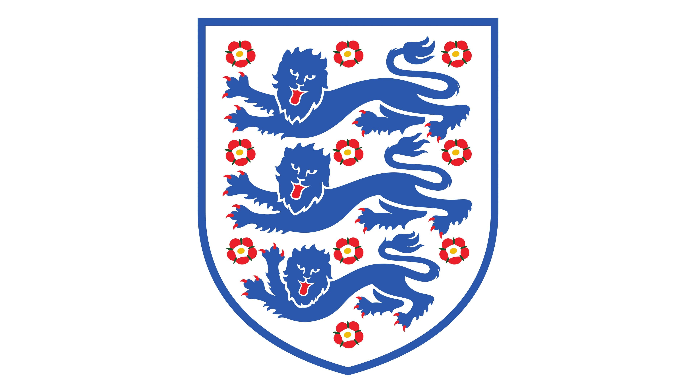
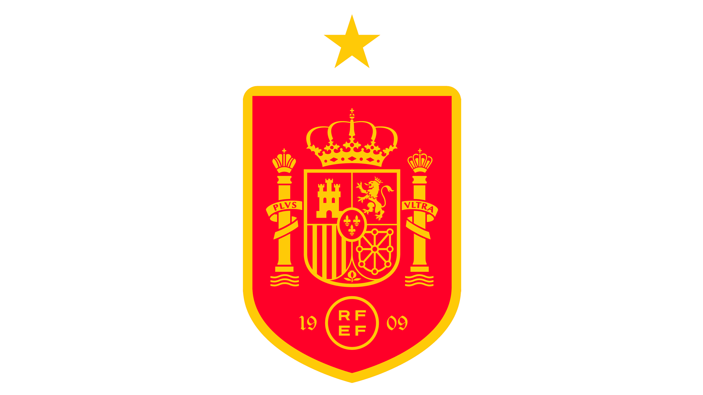
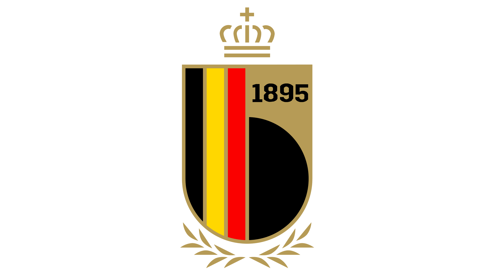
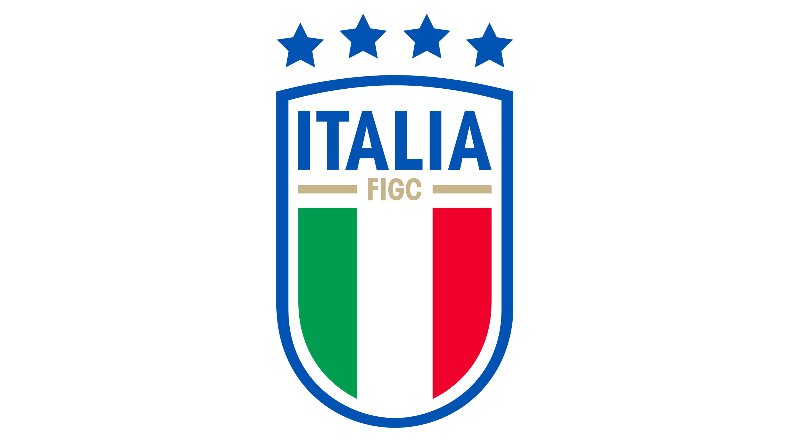
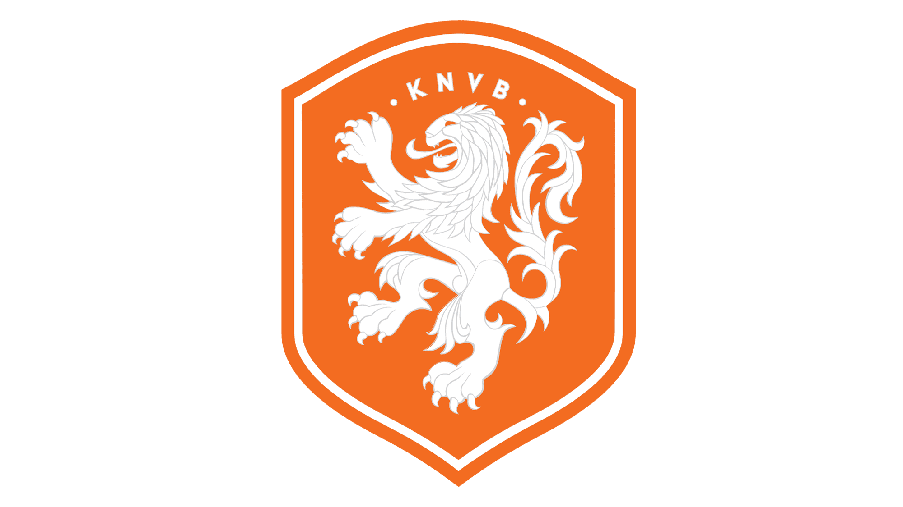
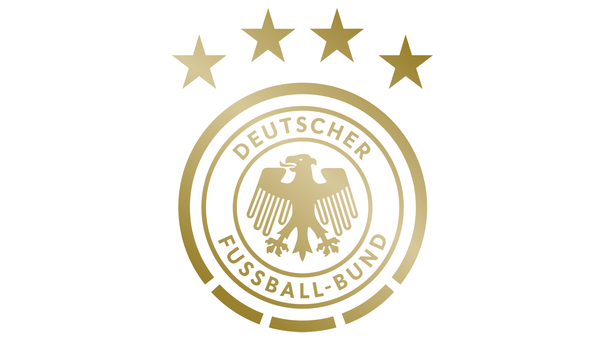
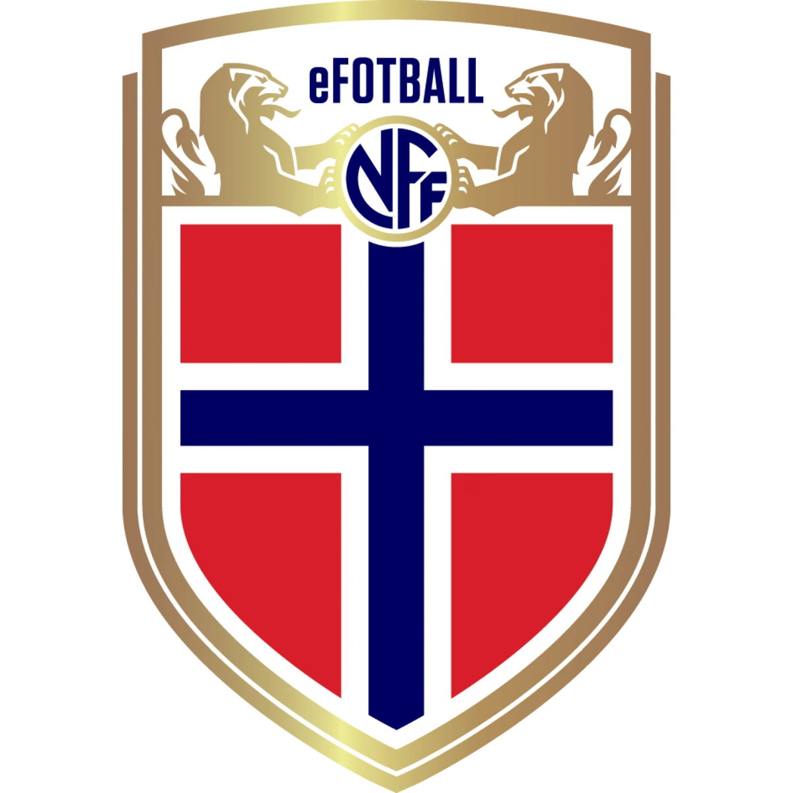

the soccer hub: teams
Soccer Confederations of FIFA
There are 6 Soccer Confederations of FIFA in the world. These confederations are listed below :
- Asian Football Confederation (AFC)
Confederation of African Football (CAF)
Confederation of North, Central America and Caribbean Association Football (CONCACAF)
South American Football Confederation (CONMEBOL)
Oceania Football Confederation (OFC)
Union of European Football Associations (UEFA)
Union of European Football Associations (UEFA)
The Union of European Football Associations, or just UEFA, is my favorite soccer confederation out of the 6 mentioned above. It is also the most popular among the 6 other confederations in the world.
My Favorite Teams in the UEFA
Out of the 55 countries and their own respective teams, my personal favorite teams are the following :
- Portugal
England

Spain

France
Belgium

Italy

Netherlands

Germany

Norway

Croatia